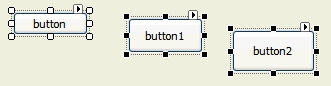

You typically select position the mouse pointer over the item and press the left mouse button; also known as clicking.
more than one controla visible form component used to display data or accept user input in the graphic form. See form component. to arrange or bulk-edit them.
position the mouse pointer over the item and press the left mouse button; also known as clicking.
more than one controla visible form component used to display data or accept user input in the graphic form. See form component. to arrange or bulk-edit them.  Click for more details:
Click for more details:
When you selectposition the mouse pointer over the item and press the left mouse button; also known as clicking.
a group of controls one of them (usually the first control that is selected)
is the primary control. This primary control is characterised by its sizing handlessmall boxes that appear around the perimeter of a selected item, which if dragged changes the size of this item. See drag.,
which have a different color (usually white) from the other controls (usually
black).

When applying formatting options to this selected group of controls, this primary control will be the one from which all of the other controls get sizing and formatting options.
Tip: Once a group of controls has been selected, click on the control that you want to be the primary control and the color of its sizing handles will change accordingly.
Note: In order to de-select the currently selected controls, either click on another control in the window or click in another window.
To individually select multiple controls:
Tip: The last control,
that is clicked, will become the primary controlwhen a group of controls are selected, the sizing handles of this control are white and its attributes will be used if this group of controls are formatted. See control..
To bulk select multiple controls:
when a group of controls are selected, the sizing handles of this control are white and its attributes will be used if this group of controls are formatted. See control..